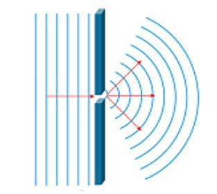
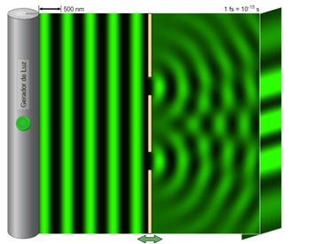
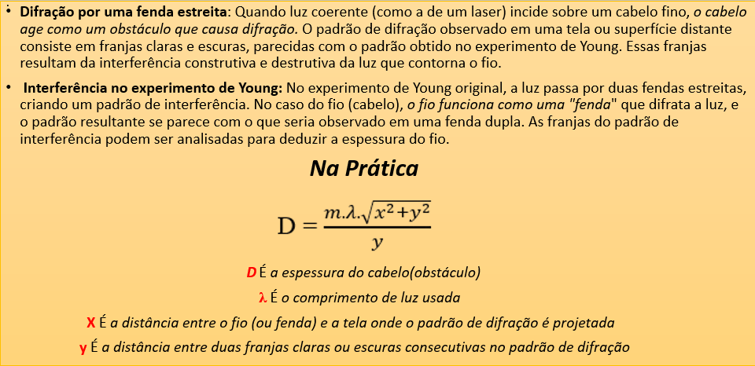
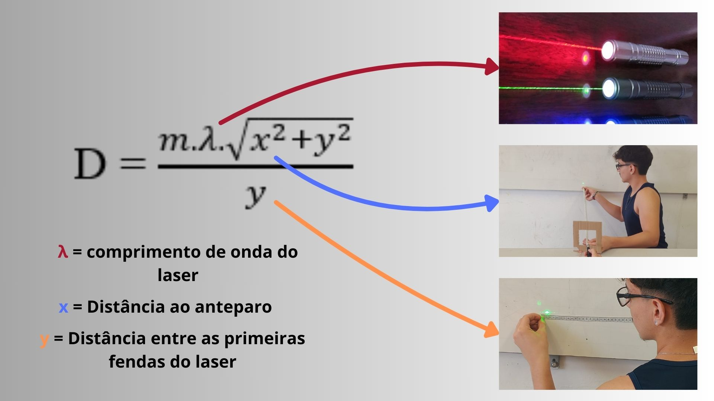

Você gostaria de aprender como calcular a espessura do
fio de cabelo usando
laser?
1ª Difração
A difração é o fenômeno que ocorre quando uma onda passa por um orifício ou contorna um objeto com dimensões semelhantes ao seu comprimento de onda. De acordo com o Princípio de Huygens, cada ponto da frente de onda que atinge um obstáculo ou fenda se comporta como uma fonte de ondas secundárias, permitindo que a onda contorne o obstáculo e siga adiante, formando regiões luminosas e escuras.
2º Experimento de Young
O experimento de Young em 1801 colocou o conceito na prática e o resultado foi o seguinte: o experimento consistia em incidir um feixe de luz por um pequeno orifício e registrar do outro lado da abertura, sobre um anteparo, a intensidade luminosa desse feixe. Nesse experimento, ele observou o aparecimento de várias faixas luminosas de intensidades diferentes. Tal fenômeno mostrava que a luz sofrera difração, assim como as ondas sonoras ou as ondas de um lago.
3º Medição da espessura do fio de cabelo
Entendendo a Fórmula
